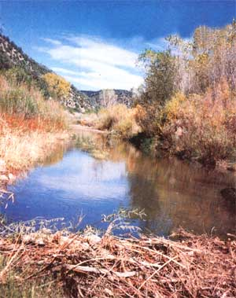
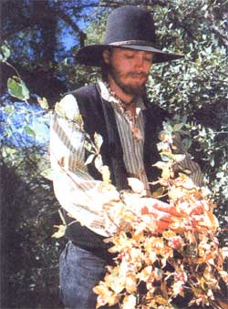
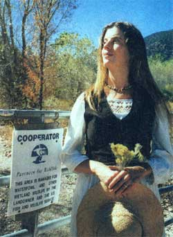

Firsthand: Reports from the Field
Many homesteaders return to the land to assert their independence, grow their own food, raise their families and reestablish their connection to the natural world. My goal was not only to experience nature intimately, but also to make a commitment to conserve, nourish and heal it. What I realized was it works the other way, too: The restoration of a small piece of land to its original natural state restored my sense of health and wholeness.
FINDING YOUR PLACE
The price of fertile farmland keeps climbing, and a 20-acre homestead within driving distance of the basic amenities can cost a small fortune. Properties that are the best candidates for wildland restoration however, can be purchased cheaply. Prime restoration tracts are often isolated, with unmaintained access roads or no roads at all. It may be too marshy for development, but perfect for re-creating a bird-loving wetland or it could be a narrow canyon that's half floodplain and half "unusable" rocky terrain, as our land was first described. It was this very undesirability for development that attracted us to what I has become a premier wildlife sanctuary of Southwestern New Mexico. Our property near reserve is located on a gorgeous bend of the St. Francis River, seven jeep-sinking crossings from the nearest pavement.
The area's pine-filled valleys are faced with streams and spotted with hot springs, while its mountain peaks up from their ancient sea beds to nearly 12,000 feet. Scattered throughout the sanctuary are the remains of a pit-house village, where the Mogollon people once gathered Juniper trees grow out of the center of a kiva, filled with rock and earth over hundreds of years.
RESTORATION
We arrived to find more than a hundred years of unrestricted cattle grazing had left die arid canyon nearly barren of ground vegetation. There were hardwoods and ponderosas, as well as a dozen varieties of cactus, but no grasses or wildflowers. Many of the magnificent old cottonwoods were gone, washed away by erosion during floods. Cattle quickly consumed tender willow itlow and cottonwood saplings. The first step toward restoring this fragile riparian ecosystem was to fence out any free-ranging cattle. An Earthen Spirituality Project apprentice harvests honeysuckle berries for planting.
An Earthen Spirituality
Project apprentice
harvests honeysuckle
berries for planting.
Our property is an inholding surrounded on all sides by national forest. The last thing we wanted was to stretch barbed wire across this unmarked landscape. But now, after 11 years of being fenced, our land has a dense forest of red willows and young cottonwoods 30 to 40 feet tall. Assistance with the cost of the fence came from the U.S. Fish and Wildlife Service's innovative Partners for Fish and Wildlife Program [(703) 358-2161; partners.fws.gov]. Anyone can apply by demonstrating their commitment to restoring a piece of land and by promising to maintain it in part as habitat for waterfowl or other foraging wildlife.
But cattle weren't the only ones affecting the land. Although we strove to stride lightly upon the Earth, I had failed to consider confining our literal footprints to paths. For most of my life I've balked at guided tours and marked trails, so it was with some trepidation that I arranged the surface rocks into borders channeling our footfalls. I took them from a wide area to avoid disrupting the appearance of the land. Soon the rock borders were catching eroding soil. Like the stone check dams across every arroyo and drainage ditch, the borders serve as slightly raised seedbeds for wildflowers.
We soon saw the importance of limiting our impact in other ways. We signed binding land use covenants that put a cap on the number of people who could live on the property and specified the number and type of structures that could be built. We made the difficult decision not to have pets on the sanctuary, and immediately began noticing how much closer the wildlife would approach. Wild skunks sometimes climb up on our laps for handouts, and foxes munch on juniper berries in the branches above our primitive outdoor kitchen. Bears have returned, and for the last five years a pair of mountain lions have felt safe enough to raise their spotted kits nearby. To avoid coming into conflict with the wildlife we were attracting, we chose to forgo a domestic garden. A large variety of indigenous foods flourished: tasty nettles, lamb's quarters, acorns, black walnut, cattail, currant, mulberry, grape and prickly pear.
We soon discovered not all plants growing on the property were beneficial to our restoration efforts. Horehound (Marrubium vulgare) was one plant we first welcomed but then cursed, when it grew to form a solid wall of waist high vegetation. Areas once graced by desert mariposa tulip, Rocky Mountain bee plant, prickly poppy and evening primrose were invaded by the hostile horehound. Because we didn't want to plow or spray with pesticides, we accepted the hands-on responsibility of removing the horehound one plant at a time, eventually clearing a pathway for the natives.
THE WILD COVENANT
When talking about what makes something wild, it helps to understand the nature of the word: not wild as in "destructive or out of control," but as in "true to its own nature." Restorationists are dedicated to healing and protecting the integrity of the land. No project can exist apart from the larger community, and every restored wildland has something special to teach visitors. To share these natural revelations, we established the Earthen Spirituality Project, where we host workshops and other educational programs. A Web site broadens our outreach, and we selfpublish books filled with our insights and experiences. Students from around the world join us to learn not only the philosophy and practice of restoration, but also to practice awareness and responsibility. A deliberate reciprocal relationship with the land benefits not only its ecological health, but also our personal, emotional and spiritual well-being. By consciously restoring some land to its original wild state, we are in turn restored.
For more information, contact the Earthen Spirituality Project; Box 516; Reserve, NM 87830; www.concentric.net/-earthway.
What's YOUR story?
Nobody knows more about the joys and challenges of living lightly on the Earth than those of you already pursuing the dream. Send us your Report; if it's chosen for publication, we'll pay you $100. Submit your Report of about 1,000 words, along with several photos, to: Firsthand Reports; Mother Earth News; 1503 SW 42nd St.; Topeka, KS 66609-1265.
|
 A beaver dam takes shape along the Hardin property's restored riverbank. |
 An Earthen Spirituality Project apprentice harvests honeysuckle berries for planting. |
 As a Partners for Wildlife Cooperator, the Hardins pledged to restore and maintain the St. Francis riverside sanctuary as essential wildlife habitat. |